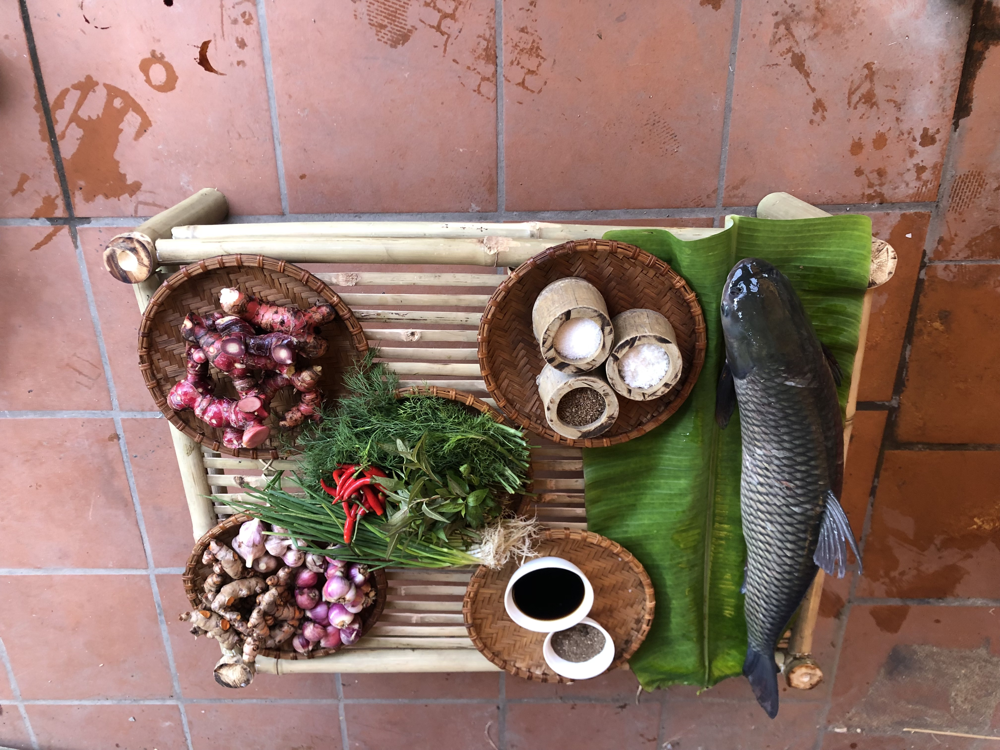
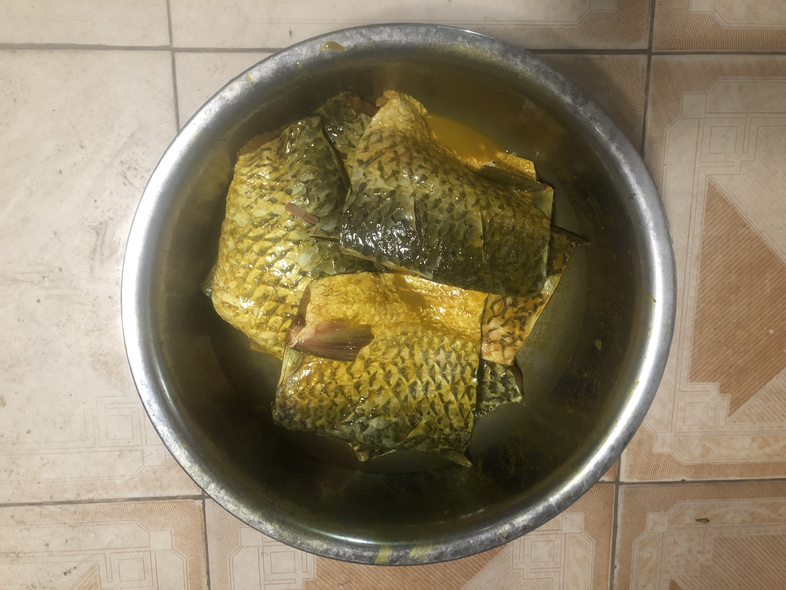

Cá nướng thằng Bờm - Ăn lành sống khoẻ
Đặc sản cá nướng Thái Xuyên
Với các bạn Tết là gì?
Với tôi Tết đơn giản lắm! Tết là sum vầy bên gia đình mình. Được cùng những người thân yêu nhất của mình bên nhau, cùng chờ đón Tết, cùng nhau chuẩn bị những món ăn ngon cho ngày Tết thêm đủ đầy.
Quê tôi Thái Xuyên – Thái Thụy – Thái Bình một vùng đất chiêm trũng hầu như gia đình nào cũng có 1 cái ao để nuôi thả cá. Và thế là bằng sự khéo léo, cần cù của người dân họ đã nghĩ ra nhiều món ăn ngon từ cá. Trong đó có món cá nướng Thái Xuyên – nức tiếng xa gần.
Làm cá nướng cũng đòi hỏi cầu kỳ, nhiều công đoạn. Từ sáng sớm khi trời còn tờ mờ sáng, vượt qua cái rét lạnh căm căm của mùa đông, những người đàn ông khỏe mạnh nhất trong nhà đã hò nhau kéo lưới bắt cá. Cá để nướng ngon nhất phải là cá trắm đen hoặc trắm cỏ nặng từ 3,5 kg đến 4,5 kg khỏe mạnh. Cá được kéo về sẽ được đánh vảy, cắt miếng, xát muối rửa sạch sau đó lau khô để chuẩn bị ướp gia vị.

Gia vị của cá nướng Thái Xuyên là các cây củ dễ tìm trong vườn nhà được chuẩn bị từ trước. Đó là củ riềng, củ nghệ, hành, tỏi, ớt, hành, răm, lá thì là, mắm, mì chính… Đặc biệt là phải có hạt thì là – đó là hương vị làm nên đặc trưng của cá nướng Thái Xuyên.
Sau khi ướp cá với mắn, muối, cùng các gia vị trên trong thời gian từ 30 phút đến 1 giờ, khi cá ngấm gia vị sẽ cho cá vào kẹp để nướng.

Kẹp cá làm từ cây tre vót dài khoảng 1 m. Cá được nướng trên bếp than hoa. Để cá được thơm ngon hơn than nướng cá tốt nhất là than từ củi nhãn.
Khi cho gắp cá lên bếp nướng phải điều chỉnh lượng than cho phù hợp để cá chín đều, lên màu đẹp. Nướng cá cần phải kiên nhẫn chờ đợi khoảng 6 – 8 giờ mới xong một mẻ cá. Khi nướng xong cá có màu vàng cánh gián tỏa hương thơm bay xa đặc trưng. Bẻ ăn 1 miếng cá bạn sẽ thấy đầy đủ độ ngon dai ngọt của cá. Để thưởng thức món cá ngon chọn vị ta có thể chấm cá với nước mắm Diêm Điền thêm chút tiêu, ớt. Hoặc gói cá với rau xà lách, lá húng, lá mùi, chuối, xoài, dưa chuột, cà rốt thái sợi thêm miếng thịt ba chỉ bao bên ngoài bằng bánh tráng chấm với mắm chua ngọt ta sẽ được một mỹ vị khó quên.
 Nếu ăn cá trong vòng ba ngày chúng ta có thể để cá treo trong nhà tránh gió đông, nồm. Nếu hút cá chân không bỏ trong ngăn mát tủ lạnh nhiệt độ từ 0 – 5 độ C chúng ta có thể để 7 đến 10 ngày. Khi ăn có thể bỏ cá vào nồi nướng không dầu nhiệt độ thấp từ 100- 120 độ để cá không bị khô hoặc lót lá chuối bỏ chảo úp vung đun trong lủa nhỏ.
Cá nướng là một món ăn ngon, đầy đủ dinh dưỡng và tốt cho sức khỏe nên được rất nhiều người yêu thích. Là nét đẹp văn hóa ẩm thực của người dân quê tôi. Món cá nướng có mặt trong tất cả những mâm cổ. Những người con xa quê, đi xa về gần đều mong chờ để được thưởng thức vị cá nướng Thái Xuyên cổ truyền, nức tiếng gần xa.
Nếu ăn cá trong vòng ba ngày chúng ta có thể để cá treo trong nhà tránh gió đông, nồm. Nếu hút cá chân không bỏ trong ngăn mát tủ lạnh nhiệt độ từ 0 – 5 độ C chúng ta có thể để 7 đến 10 ngày. Khi ăn có thể bỏ cá vào nồi nướng không dầu nhiệt độ thấp từ 100- 120 độ để cá không bị khô hoặc lót lá chuối bỏ chảo úp vung đun trong lủa nhỏ.
Cá nướng là một món ăn ngon, đầy đủ dinh dưỡng và tốt cho sức khỏe nên được rất nhiều người yêu thích. Là nét đẹp văn hóa ẩm thực của người dân quê tôi. Món cá nướng có mặt trong tất cả những mâm cổ. Những người con xa quê, đi xa về gần đều mong chờ để được thưởng thức vị cá nướng Thái Xuyên cổ truyền, nức tiếng gần xa.